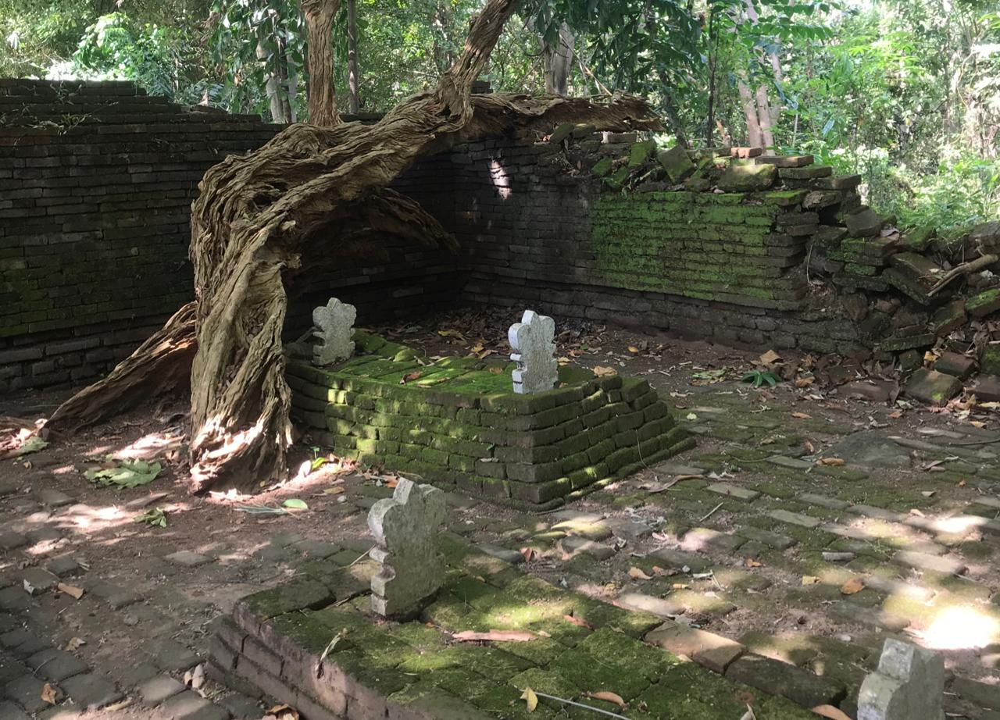

PROFILE MAKAM MBAH BUYUT JAHA
MBAH MAS KHANAFI ATAU BUYUT JAHA ADALAH SEORANG ULAMA,PEJUANG & DAN SEORANG YANG DIYAKINI OLEH BANYAK ORANG SEBAGAI WALIYULLAH.

Makam Mbah Buyut Jaha
Latar Belakang Mbah Buyut Jaha(KIAI MAS KHANAFI)
Kiai Mas Khanafi atau yang lebih dikenal dengan sebutan Buyut Jaha yang makamnya berada di Desa Sampiran,Kecamatan Talun Kabupaten Cirebon,adalah seorang ulama sekaligus pejuang yang begitu gigih melawan penjajah.Beliau tergabung dalam kelompok pejuang yang mempunyai nama 'Ardisela'.Oleh sebab itu,selain dikenal dengan sebutan Buyut Jaha,Kiai Mas Khanafi juga dikenal dengan nama Ardisela Jaha. Menurut beberapa sumber,kata Jaha ini erat kaitannya dengan nama sebuah kawasan di Banten,tepatnya dekat dengan pantai Anyer.Sekitar tahun 1700 an M,di sekitar pantai itu terdapat sebuah kampung bernama Jaha,di mana di kampung tersebut banyak dihuni oleh para pendatang yang berasal dari Arab dan Yaman.Sebagian dari mereka adalah pedagang,dan beberapa diantaranya terdapat kelompok habib yang memang berniat membantu penyebaran ajaran Islam di Jawa bagian barat,khususnya Banten.Selain di Anyer,kampung atau kawasan dengan nama Jaha juga ditemukan di Serang dan di Cikaduen Pandeglang Banten.Belum diketahui secara pasti apakah daerah-daerah itu hanya mempunyai kesamaan nama atau memang ada kaitan antara satu tempat yang bernama Jaha dengan yang lainnya.
Berkaitan dengan Kiai Mas Khanafi Jaha sendiri,tak diketahui tempat di mana beliau dilahirkan.Tak ada pula yang mencatat masa lahir dan tanggal kematiannya.Namun diketahui jika masa hidup Kiai Mas Khanafi masih satu era dengan Mbah Muqoyim dan Kiai Ardisela Dawuan Sela (Buntet).Hanya saja usianya diperkirakan jauh lebih muda,karena beliau adalah menantu dari Kiai Ardisela Buntet dan keponakan ipar Mbah Muqoyim.Sementara dengan Mbah Ardisela Tuk,usia Kiai Mas Khanafi diperkirakan tidak terlalu jauh berbeda,karena keduanya sama-sama sebagai murid dari Kiai Ardisela Buntet dan juga Mbah Muqoyim.Diketahui juga jika anak perempuan dari Kiai Mas Khanafi yang bernama Nyai Latifah dan anak perempuan dari Mbah Ardisela Tuk yang bernama Nyi Mas Aris ini di kemudian hari menjadi besan.
Kiai Mas Khanafi adalah anak dari Kiai Hasyim bin Abdullah bin Hasyim bin Musayyakh bin Ahmad bin Yahya.Seorang ulama keturunan Rasulullah SAW bermarga Yahya.Ayah dan kakeknya dimakamkan di Ketingkring Wonosobo,sementara makam buyutnya yang bernama Kiai Hasyim bin Musyayyakh dimakamkan di Kutai Kartanegara,Kalimantan.Makam keluarga yang saling berjauhan ini dikarenakan mereka semua suka berpindah tempat ketika berjuang dan berdakwah. Seperti leluhurnya yang lain,Kiai Mas Khanafi menghabiskan banyak waktunya untuk berjuang dan berdakwah juga,dari satu daerah ke daerah lainnya.Selain kawasan Cirebon Selatan,kawasan Cirebon Timur juga menjadi tempat berdakwah baginya.Di sinilah beliau banyak menghabiskan waktu untuk berjuang dan berdakwah bersama Kiai Ardisela mertuanya,Mbah Muqoyim paman iparnya,dan Mbah Ardisela Tuk sahabatnya.
Kiai Mas Khanafi menikah dengan Nyai Khafiun,putri dari Kiai Ardisela Buntet dan Nyai Alfan.Secara tidak langsung,Kiai Mas Khanafi ini termasuk keponakan Mbah Muqoyim,yaitu keponakan ipar.Karena Nyai Alfan adalah adik dari Mbah Muqoyim (Pendiri Pesantren Buntet),Kiai Yahya,dan Kiai Ismail (Pendiri Pesantren Pesawahan,Cirebon).Mbah Muqoyim,Kiai Yahya,Kiai Ismail,dan Nyai Alfan adalah anak-anak dari Kiai Abdul Hadi. Dari pernikahannya dengan Nyai Khafiun,Kiai Mas Khanafi dikaruniai tiga orang putri dan seorang putra,yaitu :
- 1.Nyai Latifah
- 2. Kiai IdriS
- 3. Nyai Asfiah
- 4. Nyai Qona'ah
Nyai Latifah menikah dengan Kiai Takrifudin atau biasa juga disebut dengan nama Kiai Abdul Latif,pendiri Pesantren Pemijen-Asem Lemahabang Sindang Laut.Kiai Idris menikah dengan tiga wanita dan dikarunia beberapa anak,dan putra beliaulah yang akhirnya melanjutkan jejak Kiai Mas Khanafi dalam berjuang dan berdakwah.Makam Kiai Idris sendiri berada di Mekah.Konon,hal ini terjadi lantaran beliau meninggal saat melaksanakan ibadah haji.Sementara itu Nyai Asfiah menikah dengan Kiai Mustofa,dan Nyai Qona'ah menikah dengan Kiai Nurhasan.Dari keempat putra-putrinya ini,keturunan Kiai Mas Khanafi banyak menurunkan para ulama yang banyak tersebar di pesantren-pesantren,terutama di Cirebon.
Semasa hidupnya,Kiai Mas Khanafi dikenal sebagai ulama yang berilmu dan berwawasan luas.Karena keilmuannya yang mumpuni dalam bidang agama,maka pada akhirnya beliau dikenal luas oleh berbagai kalangan masyarakat.Karena hal ini pulalah yang membuat pihak Keraton Kanoman yang mengetahuinya hendak menjadikannya sebagai seorang mufti atau ulama keraton.Namun tawaran sebagai mufti dari Keraton Kanoman itu ditolak oleh Kiai Mas Khanafi dengan berbagai alasan,salah satunya adalah karena beliau ingin lebih dekat dengan masyarakat umum dan memberikan pendidikan agama bagi semua kalangan masyarakat.
Jabatan memang tidak membuat Kiai Mas Khanafi terlena dan menjadikannya tergoda.Justru sebaliknya,beliau malah menolak jabatan tersebut dan memilih sebagai ulama yang hidup di tengah-tengah masyarakat umum.Padahal menjadi mufti atau ulama keraton adalah sebuah jabatan dan pemberian kepercayaan yang tidak sembarang orang bisa mendapatkannya.Jabatan tersebut sangat berarti bagi sebagian orang,lebih-lebih di era di mana keraton masih begitu sangat berpengaruh pada kehidupan masyarakat .
SEJARAH MAKAM MBAH BUYUT JAHA
MBAH MAS KHANAFI ATAU BUYUT JAHA ADALAH SEORANG ULAMA,PEJUANG & DAN SEORANG YANG DIYAKINI OLEH BANYAK ORANG SEBAGAI WALIYULLAH.
Makam Mbah Buyut Jaha
Sejarah Mbah Buyut Jaha(KIAI MAS KHANAFI)
Makam Mbah Khanafi Jaha Mbah Mas Khanafi atau Buyut Jaha adalah seorang ulama,pejuang,dan seorang yang diyakini oleh banyak orang sebagai Waliyullah.Beliau seorang Syarif atau Habib bermarga Yahya.Buyut Jaha adalah menantu dari Kiai Ardisela Buntet yang menikah dengan putrinya yang bernama Nyai Khafiun binti Kiai Ardisela Buntet.Mbah Mas Khanafi adalah sahabat Mbah Raden Ardisela Tuk,yang sama-sama berjuang dalam menyebarkan ajaran Agama Islam sekaligus gigih melawan Penjajah Belanda.
Kisah Ki Jaha Cirebon yang Disegani Bangsa Jin Menurut James Dananjaya dalam bukunya yang berjudul Folklor Indonesia, mitos merupakan bagian dari folklor yang berbentuk cerita prosa rakyat. James Dananjaya memberikan gambaran bahwa mitos di Indonesia biasanya menceritakan tentang terjadinya alam semesta, terjadinya susunan para dewa atau dunia dewata, terjadinya manusia pertama dan tokoh pembawa kebudayaan, dan terjadinya awal mula adanya makanan pokok di suatu daerah, seperti beras dan sebagainya. Mircea Eliade dalam Mitos: Gerak Kembali yang Abadi, Kosmos dan Sejarah menjelaskan mitos dijadikan sebagai petunjuk dan pedoman bagi masyarakat setempat (masyarakat pengikutnya) dalam menjalani kehidupan sehari-hari. Mitos menjadikan masyarakat pengikutnya menjadi taat terhadap ajaran yang dianutnya. Selain itu, mitos mampu menciptakan suatu kesadaran akan tingkah laku dan keselarasan dalam hidup bermasyarakat.
Mitos juga dapat dipahami sebagai realitas budaya yang kompleks dengan kiasan atau cerita sakral yang berhubungan dengan kejadian pada waktu primodial, yaitu waktu permulaan yang mengacu pada asal mula segala sesuatu dan dewa-dewa sebagai objeknya. Tokoh historis diasimilasikan dengan model mistis (dewa, pahlawan, ksatria, dan sebagainya), sementara itu peristiwanya identik dengan tindakan mistis dan ajaib. Di Indonesia, banyak sekali daerah yang erat akan kesakralan mitos salah satunya adalah Cirebon. Cirebon merupakan sebuah daerah yang kaya akan mitos dan legenda. Nama yang diberikan sebagai nama tempat, nama daerah, nama gunung, danau, dan sebagainya hampir selalu berlatarbelakang mitos atau legenda. Nama tempat sendiri biasanya mengandung cerita rakyat tentang asal-usul tempat tersebut.
Masyarakat Cirebon pada umumnya mempercayai keberadaan mahluk halus. Mahluk halus yang dikenal oleh masyarakat Cirebon di antaranya adalah malaikat, iblis, setan, jin, dan mrekayangan. Salah satu cerita masyarakat Cirebon adalah kisah Ki Jaha Cirebon yang disegani bangsa jin.
Kisah Ki Jaha yang Dipercaya oleh Anak Cucunya Dalam buku Silsilah Keturunan Buyut K. Abdul Qohar Penghulu Besar Cirebon yang disusun oleh KH. Machmud Rois, ada sebuah pesan yang diwariskan oleh Ki Jaha untuk anak-cucunya. Pesan tersebut berbunyi, “Aja wuruk sudi gawe ning anak putune Ki Jaha. Laa ilaaha illallah Muhammadur Rasulullah.” Artinya, “Jangan berani mengganggu anak cucunya Ki Jaha. Laa ilaaha illallah Muhammadur Rasulullah.” Kalimat tersebut diucapkan ketika melewati atau sedang berada di tempat angker (dalam Bahasa Cirebon, disebut sungil). Namun, ada sebuah kisah yang perlu diketahui di balik pesan yang disampaikan untuk anak cucu Ki Jaha tersebut. Pada suatu hari, Sultan Kasepuhan Cirebon merasa cemas karena anaknya terkena penyakit yang aneh. Ia sudah membawa anaknya untuk berobat ke mana-mana, namun semuanya nihil. Penyakit yang diderita anak Sultan Kasepuhan tersebut tidak kunjung bisa disembuhkan. Kemudian ia teringat kepada Ki Jaha (Kiai Chanafi). Ki Jaha merupakan orang yang sakti.
Sultan Kasepuhan memanggil Ki Jaha untuk mengobati anaknya. Setelah Ki Jaha memeriksa anak tersebut, Ki Jaha mengatakan bahwa anak tersebut sakit karena gangguan jin. Lalu Ki Jaha pergi ke Gunung Ciremai (Kuningan) untuk mencari bangsa jin. Setelah sampai di Gunung Ciremai, Ki Jaha menangkap ketua jin. Ia membawa ketua jin tersebut ke Keraton Kasepuhan untuk memeriksa anak sultan yang sakit. Setelah diperiksa, ketua jin tersebut mengatakan bahwa anak tersebut tidak diganggu olehnya, tapi diganggu oleh jin yang ada di lautan.
Kemudian Ki Jaha pergi ke laut. Ketika mengetahui kedatangan Ki Jaha, para jin yang ada di laut ketakutan dan lari untuk bersembunyi. Mengetahui hal tersebut, Ki Jaha hanya tersenyum dan berkata dalam hatinya, “Silakan kalian bersembunyi ke mana pun, karena pasti akan ketahuan”. Karena kesaktiannya, maka jin-jin tersebut tetap dapat ditemukan oleh Ki Jaha. Ia menangkap tujuh jin dan membawanya ke Keraton Kasepuhan. Sebelum diminta mengobati anak yang sakit, Ki Jaha bertanya kepada tujuh jin tersebut perihal penyebab sakitnya anak tersebut. Salah satu jin tersebut menjawab, “Memang sebenarnya anak ini diganggu oleh kami, karena anak ini terlah berbuat kurang ajar. Masa kami sedang berkumpul enak-enak, malah dikencingi. Ya tentu kami balas perbuatannya itu.”
Ki Jaha menjawab, “Kalian perlu mengetahui bahwa anak ini tidak sengaja mengencingi kalian. Anak ini tidak mengetahui bahwa ada kalian yang sedang berkumpul di sana. Seandainya anak ini mengetahui ada kalian di sana, baru melihat wujud kalian saja, dia pasti sudah ketakutan. Dia tidak akan berani mengencingi kalian. Jadi sekarang, tolong obati anak ini sampai sembuh.” Setelah mendengar nasihat dari Ki Jaha, akhirnya para jin tersebut mengobati anak tersebut. Seketika, anak tersebut sembuh. Begitulah salah satu kisah Ki Jaha yang disegani oleh bangsa jin. Oleh sebab itu, wasiat Ki Jaha tersebut masih dijalankan atau dilestarikan oleh anak-cucunya hingga saat ini.
Makam Mbah Mas Khanafi Jaha teletak di Desa Sampiran Kecamatan Talun Kabupaten Cirebon.Makam beliau ini dapat dijangkau dengan mudah.Perjalalan ditempuh dari Kota Cirebon dengan menggunakan angkot jurusan Sumber dan turun di Jembatan Merah Arumsari atau Kantor Kecamatan Talun.Dari sini perjalanan bisa dilanjutkan dengan ojek menuju lokasi makam yang lokasinya tidak terlalu jauh dari petilasan Mbah Kuwu Cakra Buana atau yang biasa disebut Cirebon Girang.
Letak makam Mbah Khanafi Jaha sendiri berada di sebuah bukit yang tidak terlalu tinggi,dengan bangunan tembok bata tanpa semen yang mengelilingi makam utamanya.Bangunannya tidak beratap yang terkadang membuat peziarah agak kerepotan bila hujan datang.Jalan menuju makam sudah berfasilitasi anak tangga untuk mencapai atas makamnya. Seperti makam para ulama dan wali lainnya,makam Mbah Khanafi Jaha juga ramai dikunjungi pada hari-hari tertentu,terutama hari Kamis,Jumat dan hari-hari besar umat Islam.Apabila ingin berkunjung ke makam ini,ada baiknya siang atau sore hari,karena kalau malam gelap dan tidak ada penerangan.Hal ini dikarenakan beberapa kali dipasang listrik selalu saja mati dan tidak pernah menyala lagi,sehingga tak ada penerangan bila malam tiba.
GALERI MAKAM MBAH BUYUT JAHA
MBAH MAS KHANAFI ATAU BUYUT JAHA ADALAH SEORANG ULAMA,PEJUANG & DAN SEORANG YANG DIYAKINI OLEH BANYAK ORANG SEBAGAI WALIYULLAH.
- Gambaran makam Mbah Buyut Jaha
- Gambaran makam Mbah Buyut Jaha
{kind=link}
{kind=link}
{kind=link}
{kind=link}
{kind=link}
{kind=link}
{kind=link}
{kind=link}
{kind=link}
{kind=link}
{kind=link}
Contact
Nama : Siti Nurhaliza
Alamat : Jalan Pulasaren Timur Gg.ghofar
No Whatsaap : 087722354978
instagram : @SNRHALIJA
Location:Jl. Raya Kaligandu No.2, Sampiran, Kec. Talun, Kabupaten Cirebon, Jawa Barat 45171
Alamat :
Email:
lijanurhalija66@gmail.com
Call:
081280696486